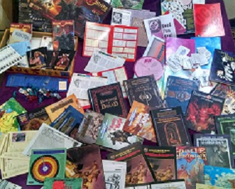

Um sistema de jogo de interpretação de papéis é um conjunto de mecânicas de jogo usadas em um jogo de interpretação de mesa para determinar o resultado das ações de um personagem no jogo
 Ler mais sobre o assuntoRole-playing game, também conhecido como RPG, é um tipo de jogo em que os jogadores assumem papéis de personagens e criam narrativas colaborativamente. O progresso de um jogo se dá de acordo com um sistema de regras predeterminado, dentro das quais os jogadores podem improvisar livremente
Nesta página falaremos sobre as principais coisas sobre RPG que você precisa saber, desde sistemas até como mestrar.
Independentemente de ser um jogador veterano que resolveu se aventurar do outro lado do escudo ou de um novato que já começará no meio do RPG cumprindo o papel de mestre, não há o que temer: mestrar é muito mais simples do que parece - além de ser muito divertido!
Ler mais sobre o assuntoDepois da criatividade, o mais importante para se jogar RPG é a ficha de personagem. Nela você irá dizer quem é seu personagem, no que ele é bom, o que ele gosta, etc.
Ler mais sobre o assuntoNOTICIAS RELACIONADAS
Dicas essenciais para quem quer jogar Ordem Paranormal RPG. Classes básicas, regra de sanidade, rituais e testes.